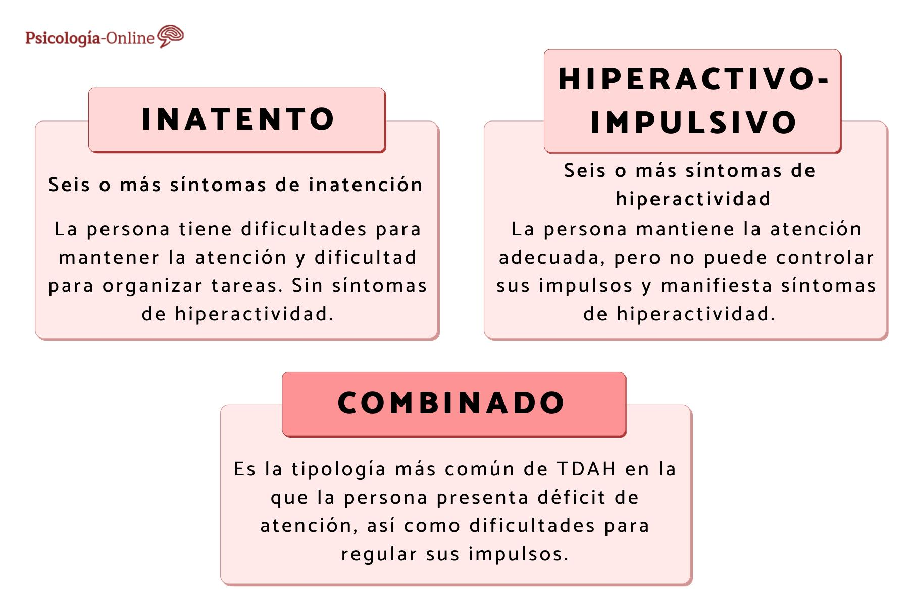

Es normal que a los niños les cueste concentrarse y comportarse bien de vez en cuando.
Sin embargo, los niños con TDAH no van dejando atrás esas conductas a medida que crecen. Los síntomas continúan y pueden provocar
dificultades en la escuela, el hogar o con los amigos. Un niño con TDAH puede presentar las siguientes conductas:
1.Fantasear mucho.
2.Olvidar o perder las cosas con mucha frecuencia.
3.Retorcerse o moverse nerviosamente.
4.Hablar mucho.
5.Cometer errores por descuido o correr riesgos innecesarios.
6.Tener problemas para resistir la tentación.
7.Tener problemas para respetar turnos.
8.Tener dificultades para llevarse bien con otros.

¿Cómo ayudar a un niño con TDAH?
La crianza y la educación en casa es tan importante como cualquier otra parte del tratamiento del TDAH. La manera en la que los padres respondan puede mejorar el TDAH, o empeorarlo. Si a su hijo le han diagnosticado un TDAH:
Involúcrese Aprenda todo lo posible sobre el TDAH. Siga el tratamiento que le recomiende el profesional de la salud que lleva a su hijo.
Acuda con él a todas las visitas médicas y de terapia que tenga programadas.
Si su hijo toma medicamentos para el TDAH, déselos a las horas recomendadas por su médico.
No cambie la dosis sin consultar a su médico. Conserve todos los medicamentos en un lugar seguro y al que no puedan acceder otras personas.
Averigüe si usted tiene un TDAH.
El TDAH se suele dar por familias. Los padres (u otros parientes) de los niños con TDAH pueden no saber que
también lo padecen. Cuando los padres con TDAH reciben un diagnóstico y un
tratamiento, este proceso los puede ayudar a ser mejores padres.
Pasen un tiempo especial para estar juntos cada día
Resérvese un rato para conversar y disfrutar con actividades relajantes o entretenidas con su hijo; aunque solo sean unos pocos minutos al día.
En esos momentos dedique a su hijo toda su atención. Felicítelo por sus conductas positivas. No lo elogie excesivamente
, pero coménteselo cuando haga las cosas bien. Por ejemplo, cuando su hijo espere su turno, dígale "¡Qué bien! ¡Estás esperando tu turno!".
Sepa de qué manera afecta el TDAH a su hijo.
Todos los niños son diferentes. Identifique los problemas que tiene su hijo debido al TDAH.
Algunos niños necesitan mejorar su habilidad de prestar atención y escuchar. Otros necesitan
prender a calmarse. Pida al terapeuta de su hijo que le dé consejos y que le enseñe maneras de ayudar a su hijo a practicar y a mejorar.
Lo más importante es su relación con su hijo.
Los niños con TDAH suelen sentir que están decepcionando a otras personas, que están haciendo las cosas mal, o que no están siendo "buenos". Proteja la autoestima
de su hijo siendo paciente, comprensivo y tolerante con él. Haga saber a su hijo que cree en él y que ve todas las cosas buenas que tiene.
Desarrolle la resiliencia manteniendo una relación positiva y afectuosa con su hijo.
Medicamentos y tratamientos comunes para niños con TDAH
Radiología:
La capacidad de la IA para interpretar los resultados de las imágenes puede ayudar a detectar un cambio minúsculo en una imagen que un clínico podría omitir por accidente.
Imágenes:
Un ejemplo es el uso de IA para evaluar cómo se verá un individuo después de una cirugía facial y de paladar hendido.
Telesalud:
Los dispositivos portátiles permiten el monitoreo constante de un paciente y la detección de cambios fisiológicos que pueden proporcionar señales de alerta temprana de un evento como un ataque de asma.
Cuidados clínicos:
Un gran enfoque de la IA en el sector de salud es en los sistemas de apoyo a la decisión clínica, los cuales utilizan observaciones de la salud y conocimiento de casos para ayudar con las decisiones de tratamiento.